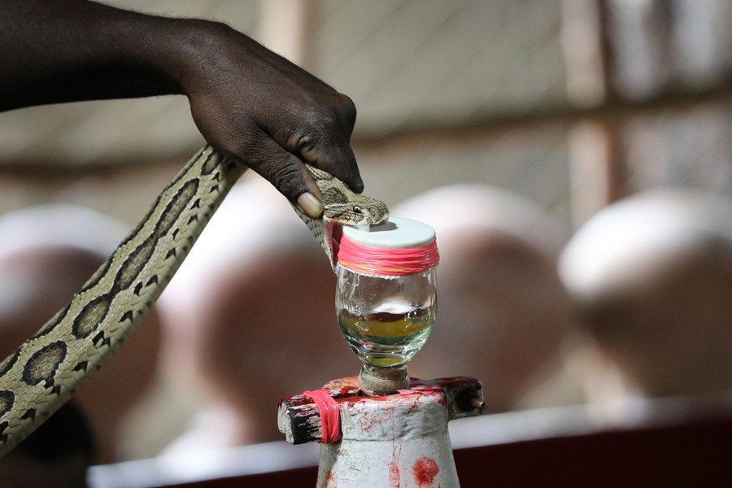

Prevention & first aid
Community education on practical prevention, effective first aid and responsible health-seeking behaviour.
Study & learning
We value education and capacity building that strengthen snakebite prevention, first aid, clinical management, research and public-health action.
Learning & capacity
Community members and healthcare workers are essential partners in reducing snakebite-related harm. Education and capacity building are central to effective prevention, first aid, management and treatment.
We aim to connect researchers, practitioners, students and community partners around practical questions in snakebite and global health.
Ask about learning opportunities ↗
Learning themes
Learning can support people at different points in the prevention, treatment and research pathway.
Community education on practical prevention, effective first aid and responsible health-seeking behaviour.
Education for healthcare workers on snakebite recognition, management and treatment.
Evidence generation, research collaboration and advocacy skills to support stronger policy action.
Connect with us
Contact iMass Innovation to discuss potential education, research or capacity-building collaboration. Specific courses, admissions and dates should be confirmed directly with the team.